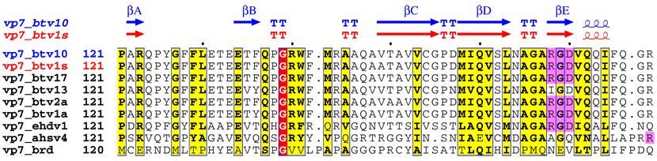
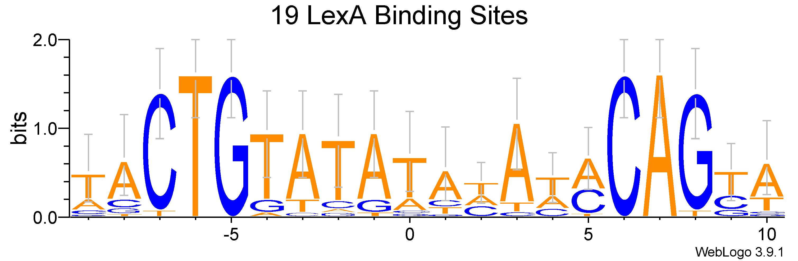

1. 前言
在这里我们放一个 AI 对其的比喻：“如果说 BLAST 是在茫茫书海中寻找相似的句子，那么保守性分析（Conservation Analysis）就是通过对比不同物种的“同款句子”，找出哪些字词是千万年都不敢改动的。”一般来讲，如果一个功能非常重要，那么它的序列一般都不会发生改变（因为发生改变的都被自然淘汰掉了）。我们可以认为 保守 = 重要 = 有用！
保守性分析的本质就是将一堆序列进行对齐，算法核心就是多序列比对 MSA 算法 (Multiple Sequence Alignment)。关于 MSA 算法，我们会在算法栏浅析原理，这本质上是一个数学问题。
2. 软件和方式
我目前做保守性分析最常使用的软件是 MAFFT （也是目前我唯一用过的）。MAFFT 分为在线版和离线版，其使用涉及大量的算法参数调整，但是，幸运的是，我们对其参数不需要了解的很深入就可以使用了！
无论使用哪种，我们的数据原料都是记载要比对的序列的 .fasta 文件。而 MAFFT 输出的也是 .fasta 文件，只是序列里多了破折号 - 。除此之外，还有 Clustal 格式和 Phylip 格式。
2.1 MAFFT 在线版
你可以使用这个链接直接进入 MAFFT 的官网。
所有的参数调整都是在 速度 和 准确性 两者之间进行取舍。作为初学者，我们只需要提交 .fasta 文件就可以了。
MAFFT 也提高了几种预设策略：
- L-INS-i：最慢但最准。适合具有长 gap 或只有局部保守的序列。
- G-INS-i：适合整条序列从头到尾都比较相似的情况（全局比对）。
- E-INS-i：适合含有大量高度不保守区域的序列。
- FFT-NS-2：使用进阶的树结构，速度极快，是比较基因组学处理大规模数据的常用策略。
2.2 MAFFT 离线版
我还没用过，一般在线分析就足够了，后面大批量再构建流程吧！
3. 输出文件
保守性分析其实本质上就是一个多序列对比，我们要的就是对齐后的 .fasta 文件，而证明它的保守性取决于我们选取的物种数量，如果我们选择的物种间隔很近并在某一位点保守（一样），我们只能得出在它们的近缘种之间保守。如果你比较的物种很远，属于纲或门以上分类的话，那么你就可以认为这个位点在不同层级（纲、门）都有着强保守性。
4. 可视化
我们可以将最后生成的 .fasta 文件进行可视化，当然你把整个文件都可视化肯定是没必要，我们一般只展示其中一个位点的保守性。
对于全局保守性分析，我们可以使用 ESPrint 进行可视化：

但是这个有点丑，只适合我们分析，我们可以使用 WebLogo 进行局部可视化用来放到论文中（当然你全部丢进去生成的文件会很大，没有必要）。

我们可以看到明显的 TATA 框，即代表这这一块具有很高的保守性。